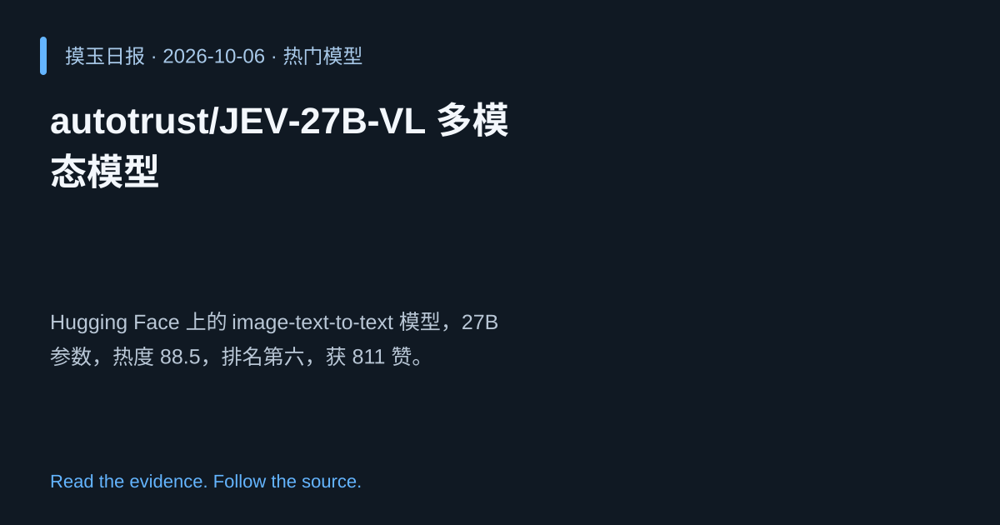

2026-10-06 · Asia/Shanghai · 热门模型 · #6
autotrust/JEV‑27B‑VL 多模态模型
autotrust/JEV-27B-VL
Hugging Face 上的 image‑text‑to‑text 模型，27B 参数，热度 88.5，排名第六，获 811 赞。
为什么值得关注
提供高容量多模态能力，适配视觉语言任务，尽管点赞较少仍显示潜在价值。
- 27B 参数支持复杂视觉语言推理
- 热度 88.5/100，排名第六
- 面向多语言多模态应用

热度 88.5 / 100；排名与评分保留该期记录。